Overview
Lendi is a settling-in companion for international students in their first weeks in a new country. Each practical task, such as opening a bank account, getting a phone number, or finding transport, is a quest made of steps, with a kit of documents to collect and a peer layer called the Grapevine, where students who have done a step share what worked.
It began as an entry to [competition name], which asked teams to pick a problem facing a specific Gen Z community, build a technology-based solution, and show that people want or need it. The demo follows one quest, Banking & Payments, from onboarding to quest cleared.
The idea came from my own move from Zimbabwe to the United States for university, and from my sisters’ moves to Malaysia and Italy.
My Role
I led the project from research through visual design. I wrote the secondary research synthesis and the arrival survey, set the product direction and the information architecture, and designed the wireframes, the visual system, and the logo.
Delight Nyanhete built and deployed the MVP, made the presentation video, and helped recruit survey respondents. Abeni Ofunniyin mentored the project and reviewed it at the dry run.
The Problem
Moving abroad for university means relearning ordinary tasks: opening a bank account, getting a working phone number, getting around, and sorting out school paperwork. Many of these tasks depend on each other, and the information is spread across university emails, provider websites, group chats, and whoever a student happens to know. Students struggle to know what to expect, what to do next, and where to turn when something goes wrong.
Secondary research
Before the survey, I reviewed published studies, enrollment data, and existing products. The most specific finding was a chain of tasks at arrival: without a US bank account or mobile data, students could not book a ride from the airport, and some accepted rides and rooms from strangers. University checklists, WhatsApp groups, and Reddit each covered part of the problem. The strongest alternative was a person who had already done the task.
The arrival survey
The survey never mentioned Lendi or a solution, so answers described what happened to people. It asked which tasks were hard, which was hardest, how long it took, and who finally helped.
Arrival survey
16 of 20
had limited or no local contact
14 of 20
took a week or more, or still aren’t sorted
More than one answer allowed.
20 responses from a voluntary sample. Banking was named the single hardest task 7 times and transport 6 times.
Banking and transport led, most hardest tasks took a week or more, and help came as often from students who had done the task as from friends. The product needed a clear order for each task and a way to hear from someone who had already done it.
The Concept
Lendi turns the first weeks into a map of quests. Each quest is a set of steps, and each step has instructions, what to bring, contacts, and an official source with a reviewed date. When a step goes wrong, I’m stuck offers a checked answer, contacts, or a way to ask a student who has done that step.
Banking & Payments became the demo quest because it led the survey and because our mentor works in banking and could check its content. Phone and transport appear on the map as connected quests.
Information Architecture
Lendi has three tabs and an avatar. Home is a map with quests grouped by topic, such as Money, Health, and Getting around, opening on what matters now with a rail of quests by priority. The Grapevine collects tips and questions from students, browsed by quest. Inventory holds the kit, notes, and a quest log. Profile and settings sit behind the avatar at the top left.
The bottom navigation is hidden inside quest and step screens, so those screens stay on the one task.
The Wireframes
I designed 30 low-fidelity screens over five rounds: quest and step screens, I’m stuck and the Grapevine, the three tabs, starting and finishing a quest, and onboarding. I worked in Claude Design, where each round opened with two or three options, and nothing moved into the final set without my go-ahead. The wireframes stayed greyscale so feedback stayed on structure.
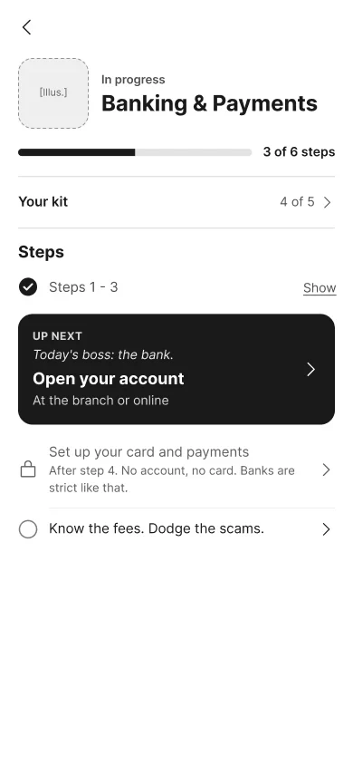
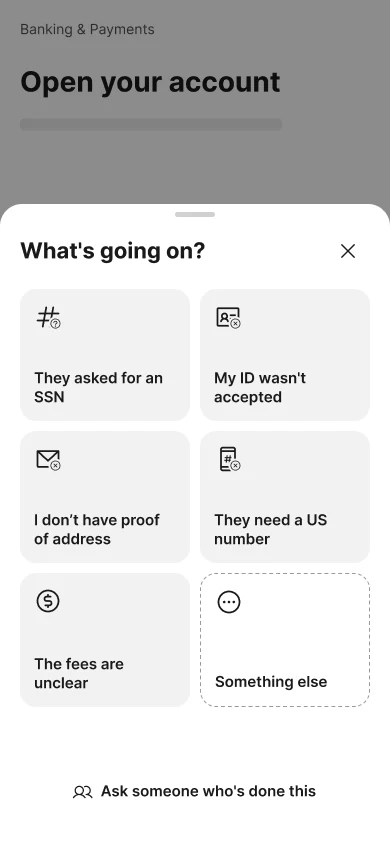
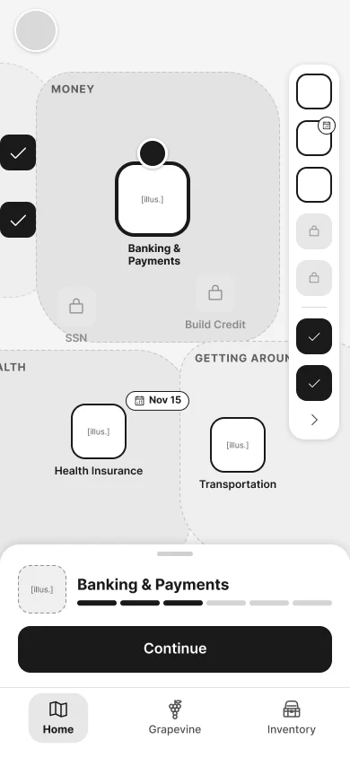
Visual Design
Palette and type
The direction is a stamped map: parchment, pine ink, and a vermilion stamp, on a clean layout. Display type is Baloo 2 and body text is Nunito. The palette went through rounds A to O before the final one. Sky blue and green were ruled out as dominant colors, and green appears only as a success state, always with a check.
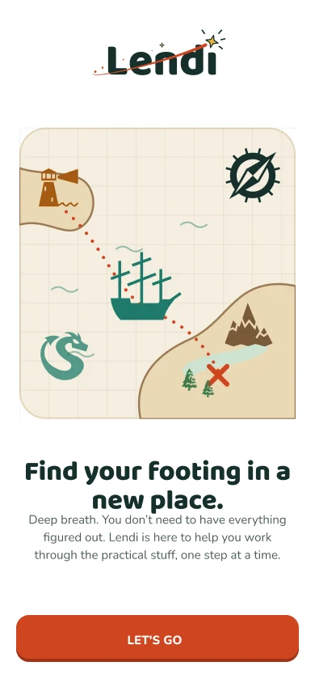
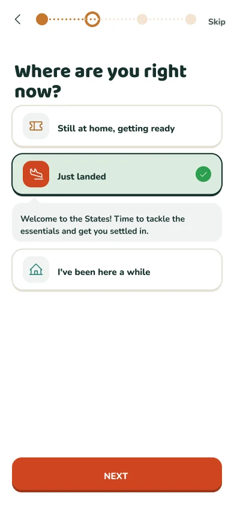
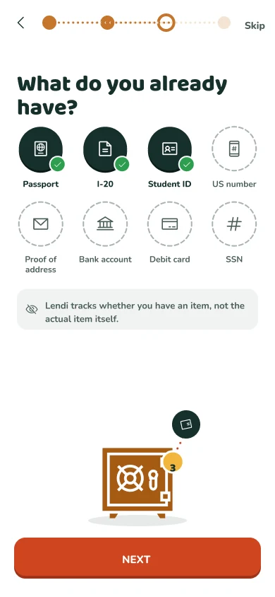
Edges and elevation
Anything you can press has a darker edge in its own hue, such as vermilion under primary buttons and teal under Ask. Seals and illustrations get a pine outline instead, so artwork never looks pressable. In dark mode, raised items get darker edges and slabs, never light borders.
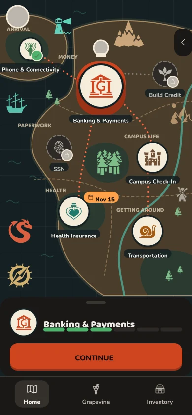
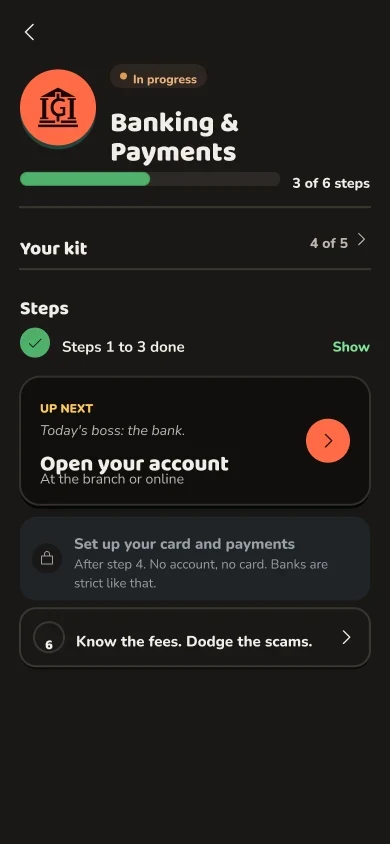
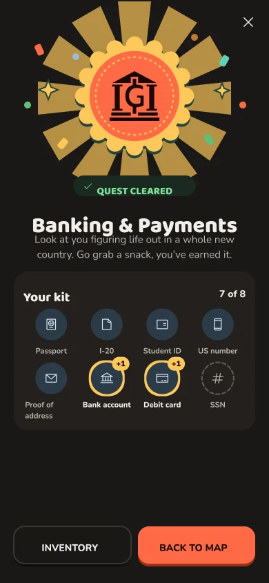
The logo
The wordmark is Baloo 2 in pine ink. A gold star lands where the dot of the i would be, at the end of a vermilion orbit that stops just short of it. Directions I dropped included an arrival stamp, which pointed at paperwork, and a guiding star that read as a Christmas tree topper.
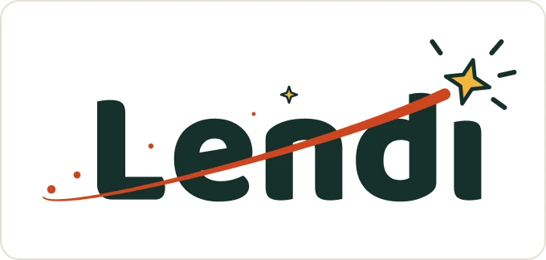
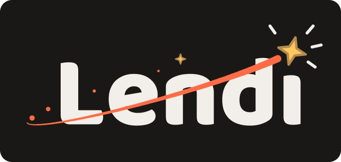
Banking Quest
The demo quest has six steps, from comparing banks to knowing the fees. The quest screen shows the kit a student needs, with owned items filled and missing ones dashed. Each step pairs I’m stuck with the main action at the bottom of the screen, so help is always one tap away without competing with the task.
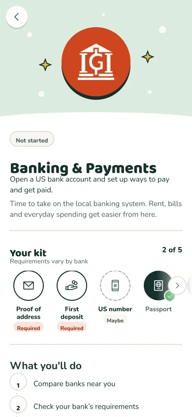
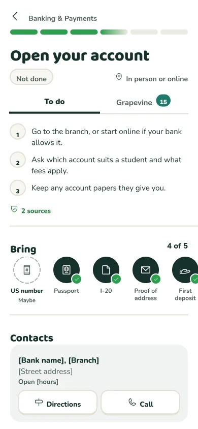
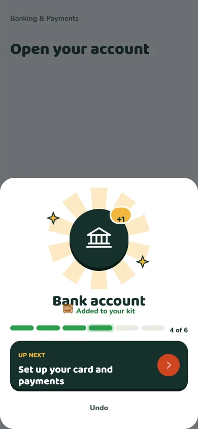
When a step goes wrong
I’m stuck opens a sheet of problem tiles, such as They asked for an SSN or My ID wasn’t accepted. A tile leads to a checked answer with an official source, or says plainly that no checked answer exists yet. From there a student can ask someone who has done the step, with the question already filled in from the step and the problem.
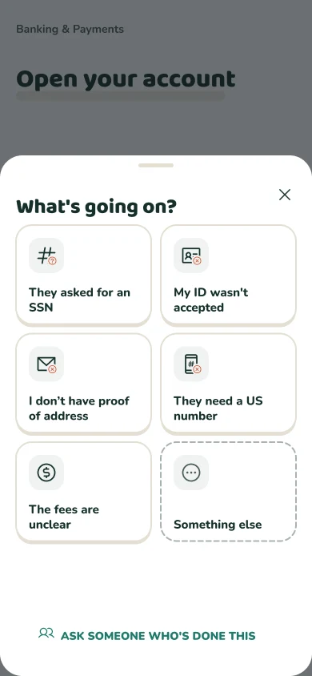
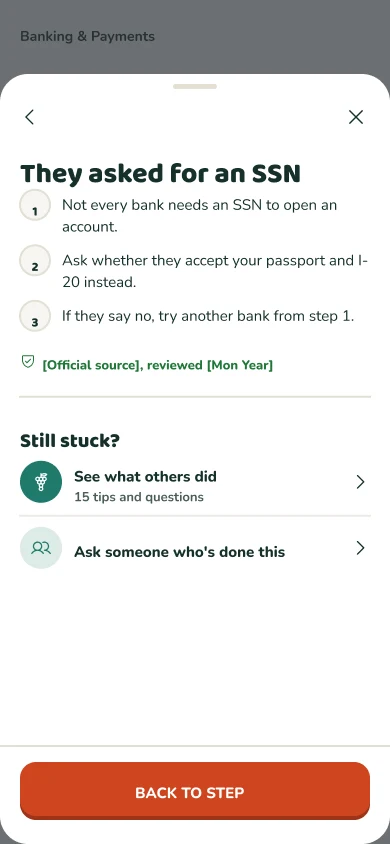
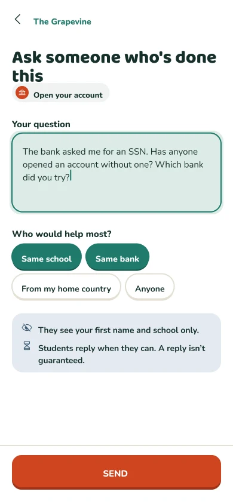
Key Decisions
Quests as the unit
Every task is a quest made of steps. “Mission” was considered and dropped because quest fits the game framing. The game layer stays light: there are no streaks, coins, or characters to manage, and urgent instructions are never behind a game mechanic.
The Grapevine as a ranked board
I considered a chat room and one-question threads. A board ranked by helpful votes suits a shared pool of answers, and there are no direct messages. Students can read without posting, other students see only their first name and school, and the app says replies are not guaranteed.
Humor kept out of stressful moments
Humor lives in quest names, the map, celebrations, and waiting screens, such as an Up next card that reads “Today’s boss: the bank.” Instructions and the I’m stuck flow stay plain, because that is where students are stressed.
A kit that tracks status only
The kit records whether a student has an item, such as a passport, an I-20, or an SSN, and never stores the item itself. The privacy line appears in onboarding, where students first add their items.
Celebrations sized to the win
Starting a first quest gets a full screen, later quests get a toast, a step that earns an item gets a sheet, and clearing a quest gets a full screen with the kit and its new items. Every finish can be undone.
Outcome
The Banking & Payments flow is final in light and dark mode, 17 screens plus the Home map, linked as a clickable prototype. It went through a dry run with Abeni on October 29, 2026, and Delight built and deployed an MVP of the flow, linked under Project Links.
[Confirm: submission date, result, and whether the prototype was tested with students.]
What I Learned
[Your reflection]